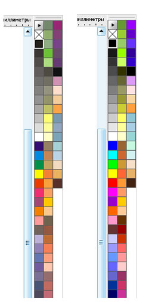
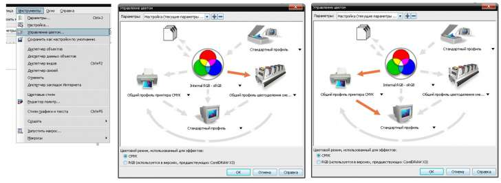

Исчезла CMYK-палитра из панели инструментов
ANDREW2008 / 01.08.2011, 17:09/00:41
Форум:
Версия программы:
12.0.0.458
Добрый день, товарищи!
Проблема такая: при работе с CorelDRAW 12 случайно нажал, что называется, "не туда", после чего исчезла CMYK-палитра, которая была расположена внизу в панели инструментов.
Нажимал "Окно" - "Цветовые палитры" - "Стандартная CMYK-палитра" - галка стоит, но самой панели нет, не появляется. (Когда включаю RGB и любые другие панели, то они появляются без проблем). Куда она могла "вылететь"? Что можете посоветовать?
Pentium Dual Core 2,6 GНz
ОЗУ - 2 Gb
Видео - 256 Mb
Win XP Tabulorasa Edition
При загрузке жми F8
Да, спасибо, разобрался! Нажимаю F8, удерживаю, затем запускаю CorelDRAW - появляется сообщение "Вы хотите перезаписать текущую раб. область?" Нажимаю - "Да", и все настройки во вновь открывшемся CorelDRAW восстанавливаются по умолчанию, в том числе и потерянная CMYK-панель. Спасибо! :)
F8 не всегда удобно.
Все выставленные ранее горячие клавиши и другие настройки становятся по умолчанию.
ANDREW2008, не совсем понятно: "...исчезла CMYK-палитра, которая была расположена внизу в панели инструментов". Думаю речь о политре цветов, которая расположена справа.
Была такая, а стала такая?

Понажимайте стрелочки.
Скорее всего слетел профиль.

Да, похоже на "слетание" цветового профиля...